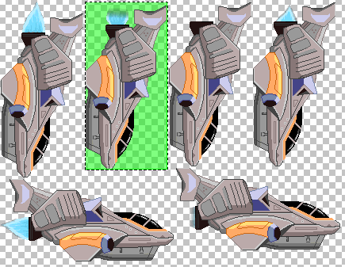

About me
Imanol Fernández
- Lead Developer at Ludei
- C/C++, JS, iOS, Android & Graphics guy
- Games, high Level & low Level stuff
- Obsessed with raw performance
- Dragon Ball & Metal Gear Solid ultra fan
- @MortimerGoro
Today, we're going to talk about
- JavaScript perfomance
- Understand how a modern JS Engine works
- Profile and Write optimized code mindfully
- C++ vs JS performance example
- Rendering Performance
- Canvas 2D tips
- WebGL tips
- Common pitfalls
- CocoonJS
- How does it work?
- Challenges
The JavaScript nature
- Extremely sensitive language
- Limited compile-time type information
A modern JS engine uses two compilers

- ASAP compiler (aka Yamcha)
- Quickly generate unoptimized JIT code
- No type inference at compile time
- Optimized compiler (aka Goku)
- High performance JIT Code
- Based on runtime heuristics and inferences
How does a JS Engine evaluate a variable?
function Test(a, b) {
this.a = a;
this.b = b;
}
Test.prototype = {
hello: function() {
console.log(mortimer);
}
}
var test = new Test(1,2);
test.hello();
Function scope
Prototype scope
Global scope
ReferenceError: mortimer is not defined
How does a Browser evaluate a variable?
function Test(a, b) {
this.a = a;
this.b = b;
}
Test.prototype = {
hello: function() {
console.log(mortimer);
}
}
var test = new Test(1,2);
test.hello();
Function scope
Prototype scope
Global scope
document.getElementById!
var div = document.createElement("div");
div.id = "mortimer";
document.body.appendChild(div);
test.hello(); //or window.mortimer
<div id="mortimer"></div>
<head><script src="jquery.js"></script></head>
<body>
<canvas id="mycanvas"></canvas>
<script type="text/javascript">
var canvas = $('#mycanvas');
</script>
</body>
<body>
<canvas id="mycanvas"></canvas>
<script type="text/javascript">
var canvas = mycanvas;
</script>
</body>
Mutenroshi's Tips
- Avoid long prototype chains
- Avoid global scope variables or flags
Hidden classes
Optimized compiler creates hidden classes for objects at runtime
function Sprite(x, y, data) {
this.x = x;
this.y = y;
this.data = data;
}
var sprite1 = new Sprite(100,200,0);
var sprite2 = new Sprite(300,300,0);
- JIT creates a 'Sprite' class in the first constructor call
- Next constructor calls reutilize the same class
- Functions that use the same hidden classes are optimized
sprite1.tag = 11; /*Warning! Another hidden class*/
var sprite3 = new Sprite(50,50, "id43"); /*Warning! Another hidden class*/
Mutenroshi's Tips
- Initialize all object members in the constructor function
- Always use the same types for the members
- Don't use more than ~30 members: Hidden class => Hashmap
Values
How do JS Engines represent values efficiently?
union {
int64_t asInt64;
double asDouble;
struct {
union {
int32_t asInt32;
JSString* str;
JSObject* obj;
} payload;
int32_t tag;
} asBits;
}
31 bit integers can be "Immediates" (wrapped in the JSValue * pointer)
Mutenroshi's Tips
Prefer 31 bit integers: less memory & improved perfomance
Arrays
How do JS Engines handle arrays efficiently?
<64K Arrays use contiguous storage (FAST)
>64K Arrays use hash table storage (SLOW)
Numerical Arrays use optimized buffers
var array = new Array(16);
a[0] = 11; //Allocation
a[1] = 33;
a[2] = 17;
a[3] = 3.1416; //Warning! Allocation and buffer change!
a[4] = true; //Warning! Allocation and buffer change!
[11, 33, 17, 3.1416, true]; //Single allocation
Mutenroshi's Tips
- Use the same type for all array elements
- Preallocate small arrays
- Don't prealocate >64K arrays, grow as you go.
Optimized compiler
How does the Optimized compiler work?
Learns while the program runs
Inline caching: speed up runtime method bindings
function max(a, b) {
return a > b ? a : b;
}
max(1, 2);
max(300, 100);
max(45, 30); //Optimized vtable (monomorphic)
max("a", "z") //Warning! Polymorphic vtable => slower
Optimized compiler
Inlining is the mother of all optimizations
Monomorphic functions are more easily inlined
Bailouts...
- Functions with big text size
- Functions with lots of variables and arguments
- Functions with try{} catch{} blocks
- Functions with for(var in) blocks
Mutenroshi's Tips
- Always use the same types
- Never use try{} catch{} blocks in perf. critical functions
- Never use for(var in) blocks in perf. critical functions
- Prefer smaller methods
Practical example
C++ vs JavaScript code sample
//matrix1.js
// (...)
function main() {
var sum = 0;
for (var i = 0; i < 10000; ++i) {
var m = new Matrix(1.1, 2.2, 3.3, 4.4, 5.5, 6.6, 7.7, 8.8, 9.9, 10.10, 11.11, 12.12, 13.13, 14.14, 15.15, 16.16);
for (var j = 0; j < 10000; j++) {
sum+=determinant(m);
}
var p1 = new Point(1.1, 2.2, 3.3);
for (var j = 0; j < 10000; ++j) {
m.mapPoint(p1);
}
}
}
main();
Practical example
C++
//matrix.cpp
//(...)
int main(int argc, const char * argv[]) {
double sum = 0;
for (int i = 0; i < 10000; ++i) {
Matrix m(1.1, 2.2, 3.3, 4.4, 5.5, 6.6, 7.7, 8.8, 9.9, 10.10, 11.11, 12.12, 13.13, 14.14, 15.15, 16.16);
for (int j = 0; j < 10000; ++j) {
sum+=Matrix::determinant(m);
}
Point p1(1.1, 2.2, 3.3);
for (int j = 0; j < 10000; j++) {
m.mapPoint(p1);
}
sum+=p1.x;
}
return 0;
}
Perfomance profiling
V8 JavaScript shell (d8) is a very useful tool
$> time d8 matrix1.js
real 0m42.106s
$> clang++ matrix.cpp
$> time ./a.out
real 0m6.323s
C++ is ~7 times faster than JS
Wait a moment...
$> clang++ matrix.cpp -O3 #Super Saiyan Level 3 flag
$> time ./a.out
real 0m0.110s
C++ is ~400 times faster than JS!
Perfomance battle: C++ vs JS
Let's Apply the lessons learned!
~200x slower?
~100x slower?
~10x slower?
~2x slower?
faster?
Check performance bailouts
function determinant() {
//(...)
return a1 * (b2 * c3 - b3 * c2); // (...)
//test
try{
}
catch(ex) {
}
}
Remove all the bailouts and...
$> time d8 matrix2.js
real 0m15.628s
~150x
Optimized Array Storage
function Matrix(m11, m12, m13, m14, m21, m22, m23, /*(...)*/) {
var m_matrix = [[],[],[],[]];
m_matrix[0][0] = m11;
m_matrix[0][1] = m12;
m_matrix[0][2] = m13;
m_matrix[0][3] = m14; //(...)
}
function Matrix(m11, m12, m13, m14, m21, m22, m23, /*(...)*/) {
var m_matrix = new Array(16);
m_matrix[0] = m11;
m_matrix[1] = m12;
m_matrix[2] = m13;
m_matrix[3] = m14; //(...)
}
$> time d8 matrix2.js
real 0m13.967s
~140x
Check inlining
$> d8 matrix3.js --trace-inlining
Did not inline determinant3x3 called from determinant(target text too big)
function determinant3x3(a1, a2, a3, b1, b2, b3, c1, c2, c3) {
// Calculate the determinant of a 3x3 matrix
//
// | a1, b1, c1 |
// | a2, b2, c2 |
// | a3, b3, c3 |
// (...)
}
Remove the comments and...
$> time d8 matrix4.js
real 0m4.491s
~50x
Check inlining
$> d8 matrix4.js --trace-inlining
Did not inline determinant called from main (target AST is too large)
function determinant(matrix) {
var m = matrix.m_matrix;
var a1 = m[0]; var b1 = m[1]; var c1 = m[2]; var d1 = m[3]; //(...)
return a1 * determinant3x3(b2, b3, b4, c2, c3, c4, d2, d3, d4)
- b1 * determinant3x3(a2, a3, a4, c2, c3, c4, d2, d3, d4)
+ c1 * determinant3x3(a2, a3, a4, b2, b3, b4, d2, d3, d4)
- d1 * determinant3x3(a2, a3, a4, b2, b3, b4, c2, c3, c4);
}
return m[0] * determinant3x3(m[5], m[9], m[13], m[6], m[10], m[14], m[7], m[11], m[15])
- m[1] * determinant3x3(m[4], m[8], m[12], m[6], m[10], m[14], m[7], m[11], m[15])
+ m[2] * determinant3x3(m[4], m[8], m[12], m[5], m[9], m[13], m[7], m[11], m[15])
- m[3] * determinant3x3(m[4], m[8], m[12], m[5], m[9], m[13], m[6], m[10], m[14]);
$> time d8 matrix5.js
real 0m1.794s
~16x
Check inlining
$> d8 matrix5.js --trace-inlining | grep mapPoint
$>
Matrix.prototype = {
mapPoint: function(p) {
var x = this.m_matrix[12] + p.x * this.m_matrix[0] + p.y * this.m_matrix[4] + p.z * this.m_matrix[8];
var y = this.m_matrix[13] + p.x * this.m_matrix[1] + p.y * this.m_matrix[5] + p.z * this.m_matrix[9];
//(...)
}
}
function mapPoint(m_matrix,p) {
var x = m_matrix.a41 + p.x * m_matrix.a11 + p.y * m_matrix.a21 + p.z * m_matrix.a31;
var y = m_matrix.a42 + p.x * m_matrix.a12 + p.y * m_matrix.a22 + p.z * m_matrix.a32;
//(...)
}
$> time d8 matrix6.js
real 0m0.698s
~6x
Canvas And WebGL Tips
Canvas Save() and Restore()
for (var i= 0; i < sprites.length; ++i) {
ctx.save();
sprites[i].render();
ctx.restore();
}
Canvas 2D context is huge...
- Transformation Matrix
- Fill Styles
- Stroke Styles
- Current Path
- Clipping
for (var i= 0; i < sprites.length; ++i) {
ctx.translate(x,y); //transform
sprites[i].render();
ctx.translate(-x,-y); //inverse transform
}
Canvas Paths
Limited API: Transformations
Tessellation is slow
//Cache rendered path to a canvas
var canvas = document.createElement("canvas");
canvas.width = 500;
canvas.height = 500;
var ctx = canvas.getContext("2d");
ctx.beginPath();
ctx.moveTo(100,100);
ctx.bezierCurveTo(20,100,200,100,200,20);
ctx.bezierCurveTo(30,300,100,300,50,10);
ctx.fill();
ctx.stroke();
mainctx.drawImage(canvas, 0, 0);
Texture Packing
Always pack your textures
http://www.codeandweb.com/texturepacker
WebGL Text Rendering
var canvas = document.createElement("canvas");
canvas.width = 500;
canvas.height = 50;
var ctx = canvas.getContext("2d");
ctx.font = "30px Saiyan-Sans";
ctx.fillText("Hello world!",0,0);
var texture = gl.createTexture();
gl.bindTexture(texture);
gl.texImage2D(canvas);
- Canvas Texture
- Canvas Context
- System Buffer
- WebGL texture
- Data copy
Better use sprited Fonts!
http://71squared.com/glyphdesigner
WebGL bufferSubData
//initialization
gl.bufferData(gl.ARRAY_BUFFER, vertices, gl.DYNAMIC_DRAW);
//render tick
gl.bindBuffer(gl.ARRAY_BUFFER, verticesBuffer);
gl.bufferSubData(gl.ARRAY_BUFFER, 0, vertices);
Very Slow on mobile devices
Use vertexAttribPointer instead!
gl.bindBuffer(gl.ARRAY_BUFFER, 0);
gl.vertexAttribPointer(0, 2, gl.FLOAT, false, 0, vertices);
Caution with generalist Render Engines
Makes the development easier, but...
Too many state changes
We've suffered it with three.js
About us
- Bilbao and San Francisco based company
- Small but awesome development team
- Strongly focused on HTML5 technologies
www.ludei.com
HTML5 has huge advantages...
...but it's horrible on mobile
Solution: create our own tech!
Goal: Feel native in every way possible
- Accelerated canvas
- WebGL support
- High perfomance music
Native Features
- Ad networks
- In-App purchases
- Google Play
- GameCenter
- GPS, vibration, camera...
Cloud system
We give you a bundle ready to deploy.
- Android
- iOS
- Amazon Kindle
- Firefox OS
- Pokki
- Chrome Store
- Tizen
How does it work?
- It's a home made browser
- Home made Canvas, WebGL, Sound, etc... implementations
- Goal: Be faster than mobile webviews
A big challenge... Are we crazy?
Yes, but we're from Bilbao...
... and we are Dragon Ball fans ;)
The first test
#include <JavaScriptCore/JavaScriptCore.h>
int main(int argc, const char * argv[])
{
JSContextRef ctx = JSGlobalContextCreate(NULL);
const char * js = "console.log('hello world!');";
JSStringRef script = JSStringCreateWithUTF8CString(js);
JSValueRef exception = NULL;
JSValueRef result = JSEvaluateScript(ctx, script, NULL, NULL, 0, &exception);
JSStringRelease(script);
JSGlobalContextRelease(ctx);
return 0;
}
Challenge: Multiple JavaScript Engine support
#include "v8.h"
using namespace v8;
int main(int argc, const char * argv[])
{
Isolate* isolate = Isolate::GetCurrent();.
HandleScope handle_scope(isolate);
Handle<Context> context = Context::New(isolate);
Persistent<Context> persistent_context(isolate, context);
Context::Scope context_scope(context);
Handle<String> source = String::New('console.log('Hello world!')');
Handle<Script> script = Script::Compile(source);
Handle<Value> result = script->Run();
persistent_context.Dispose();
return 0;
}
Solution?
C++ Magic to solve the puzzle
//magic typedefs
typedef v8::Persistent<v8::Context> * JSContextRef;
typedef v8::Handle<v8::Value> JSValueRef;
typedef v8::Handle<v8::Object> JSObjectRef;
//magic macros
#define JSEntryPoint v8::Isolate::Scope isolateScope(getSharedIsolate()); \
v8::Locker v8Lock(getSharedIsolate()); \
v8::HandleScope handle_scope(getSharedIsolate());
#define JSContextScope(ctx) v8::Context::Scope context_scope(v8::Handle<v8::Context>::New(getSharedIsolate(),*ctx));
A really challenging puzzle (ex. 1000 fake functions)